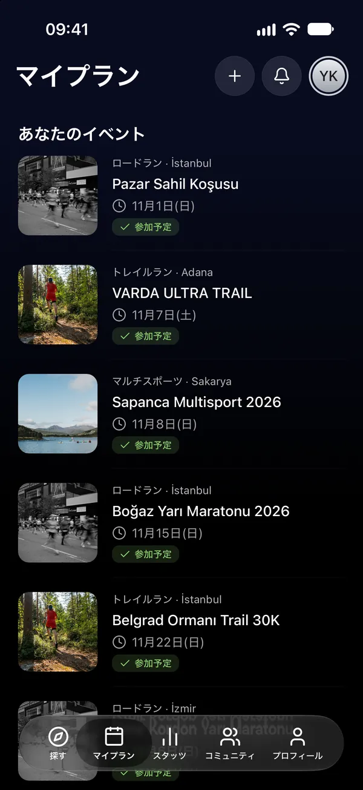
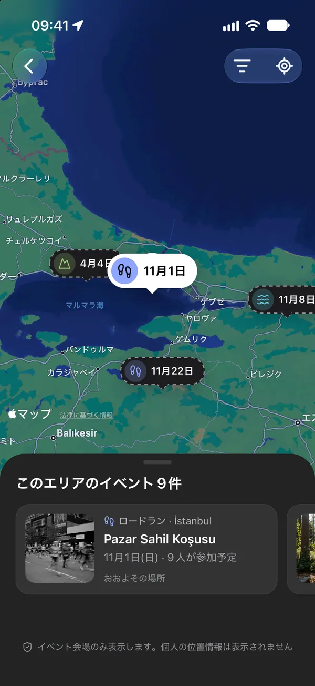
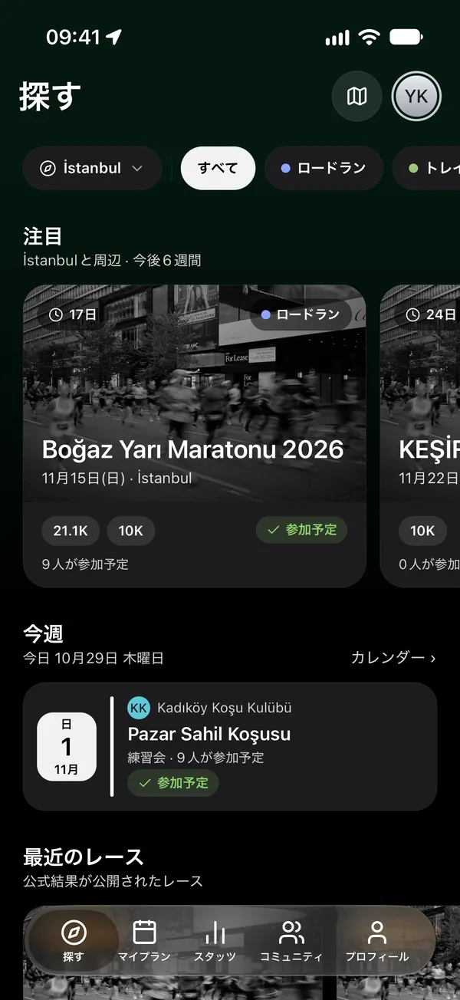
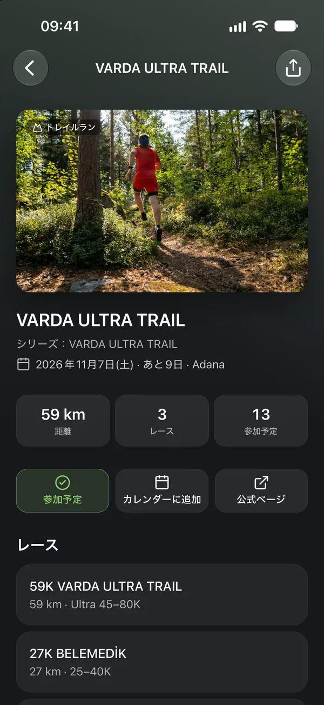
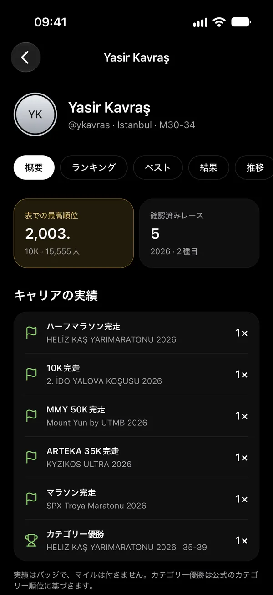
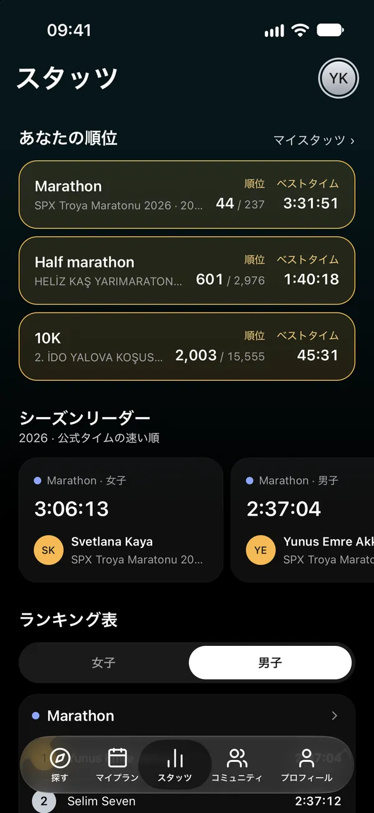
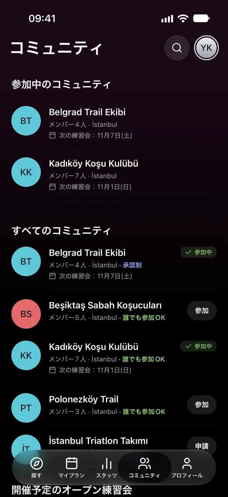

06カレンダー
カレンダーで、いつも最新
ワンタップでイベントをカレンダーに追加。プランをスマートフォンのカレンダーにライブ購読として連携すれば、日程が変わるとカレンダーも更新されます。

ロードラン · トレイルラン · HYROX · トライアスロン · オープンウォーター
レースを見つけて、キャリアを刻もう。
ランニング、トレイルラン、HYROX、トライアスロン、オープンウォーターのレースやクラブの練習会を、都市や種目で探せます。誰が参加するかチェックして、公式結果をキャリアに。
App Storeからダウンロード01探す
レースやクラブの練習会を都市や種目で探して、イベントマップでひと目で確認できます。


02マイプラン
「参加する」を押すと、イベントがプランに追加されます。フォロー中の人がどこに参加するかがわかり、プランを見せる相手も自分で選べます。
プランを見られる人は？

03キャリア
結果は主催者の公式リストから届きます。レースを選んで自分の結果を見つけ、「これは私です」を選びましょう。承認されると、キャリアと自己ベストに加わります。

04スタッツ
ランキングを許可している計測会社の公式結果が、表に入ります。種目・形式ごとのシーズンリーダーと、自分の位置をチェックしましょう。

05コミュニティ
クラブを見つけて参加しましょう。練習会はマイプランで確認でき、お知らせも見逃しません。オープンな練習会なら、メンバーでなくても参加できます。

06カレンダー
ワンタップでイベントをカレンダーに追加。プランをスマートフォンのカレンダーにライブ購読として連携すれば、日程が変わるとカレンダーも更新されます。

07フォローと通知
ランナーやクラブをフォローしましょう。プランのレースが変わったとき、結果が承認されたとき、クラブがお知らせを出したときに通知が届きます。